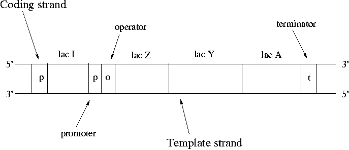
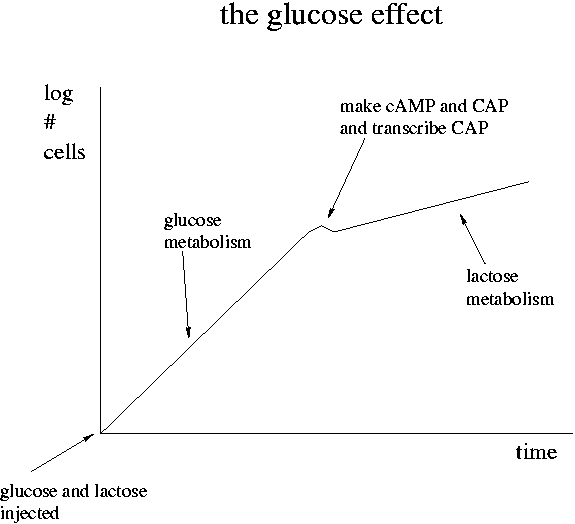
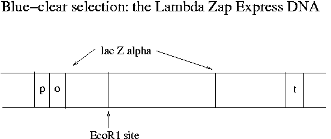
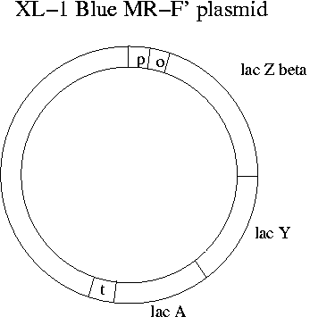

Day 3 Morning Lecture Notes
Steve Williams, Smith College
June 8, 2004
After plating phage onto bacterially infected agarose, the resulting plaques have either a blue or clear color. The first are recombinants that contain mouse DNA while the second kind have no insert due to the incomplete dephosphorylation of the Stratagene vector arms. The different colors have to do with the functionality of the Lac operon of E. coli.
Operons are clusters of genes under the control of a single promoter. A promoter is a binding site for RNA polymerase and is where transcription starts. The promoter upstream of lac Z controls expression of lac Z, lac Y and lac A. RNA polymerase binds at the promoter, pulls the strands apart, copies down to the terminator and then pops off.
Synthesis always proceeds from the 5' end of the strand to the 3'. Nucleotides are always added to the 3' free end. mRNA is synthesized in an antiparallel fashion to the template DNA. The strand that does not participate is called the "coding strand" since the mRNA bears its sequence. The only difference between the sequence of the coding strand and the mRNA is that RNA always has U's (uracil) instead of T's (thymine). DNA is conventionally drawn with the 5' end of the coding strand on the upper left.

The 7000 bp lac operon codes for proteins that control utilization of lactose by E. coli. Lactose is a disaccharide of galactose and glucose. In order to use lactose, E. coli must use beta-galactosidase to cleave the disaccharide. Lac Z encodes beta-galactosidase. Lactose also needs to be transported across the cell membrane using lactose permease, which is the protein that lac Y encodes for. Strangely the product of lac A doesn't seem to encode for a critical protein. Lac A can be knocked out without apparent harm to the bacteria. However conservation of the lac A gene over time suggests that it does have a role to play.
Note that it's sensible for lac Z and lac Y to be under control of the same promoter since both are crucial for lactose metabolism. This type of co-regulation is common in bacteria. As many as 9 genes may be under control of a single promoter. Genes can either encode for a protein or for an RNA that is never translated into a protein.
In normal cell function, we want the operon to be expressed when lactose is present and to be off when it is not. Note that the lac I gene is not part of the lac operon since it has its own promoter. Lac I codes for a lac repressor protein. The lac repressor is a a tetramer that binds the operator of the lac operon and shuts down expression in the absence of lactose. The lac repressor is a physical obstacle to mRNA synthesis. When lactose becomes available, it binds to the lac repressor protein and causes a steric change that makes it unbind from the lac operator.
If no lactose were available, lactose permease would be completely absent and the lac operon would be shut off. However the repressor protein can be thermally dislodged occasionally allowing a basal, low-level lac expression. When lactose is detected, full-bore operation can be turned on in a few minutes.
The expression of lac I is "constitutive," meaning that it is not regulated. The promoter of lac I is inefficient, meaning that its level stays low. The lac operon is an example of negative regulation since the regulatory protein is inhibitory. The promoter of the lac operon is inefficient as well, meaning that even without the repressor promoter the binding of DNA polymerase is uncommon.
In bacteria mRNA lasts for only a few minutes before degradation. In eukaryotic cells mRNAs can last for a few days. In bacteria, amino acid production can be shut down by the presence of amino acids in the food environment. Bacteria are extremely efficient at only producing the proteins that they need.
When the level of glucose is high, metabolism of lactose is slow. Once glucose is used up, metabolism of lactose speeds up. This is "the glucose effect." How does it work?

When the level of glucose is high in a cell, cAMP (cyclic AMP) is low. As glucose falls, cAMP goes up. Glucose inhibits the adenyl cyclase enzyme that synthesizes cAMP from ATP. cAMP can bind to the CAP protein and the pair can then bind to the lac promoter. In contrast to the lac I repressor, the binding of the cAMP+CAP combination increases the lac promoter efficiency. The cAMP+CAP system is an example of positive regulation. The lac operon has both negative (lac I) and positive (cAMP+CAP) regulation.
Glucose is the preferred food of E. coli. Its presence shuts down consumption of other sugars. Since lactose metabolism via beta-galactosidase produces glucose, it could in theory shut down the lac operon.
Transcription of the lac operon produces lac Z, lac Y and lac A all on an mRNA strand. Translation by the ribosome then sequentially makes beta-galactosidase, lac permease and lac acetylase. Translation produces these three products in 10:5:1 proportion despite the equal transcription. Near the 5' end of the mRNA is a ribosome binding site. There are translation start and stop codons for all three proteins. Between there are non-coding portions of the mRNA. The translation ratio is due to different efficiencies of ribosome activity. It is believed that all three mRNA transcripts can be translated simultaneously. Most ribosomes fall off the mRNA after the beta-galactosidase synthesis but some may continue on to lac permease and lac acetylase. There is only one ribosome binding site per transcript.
What does transcription of the lac operon have to due with Lambda Zap Express and blue-clear selection? The single EcoR1 site on Lambda Zap Express occurs in the part of the E. coli lac operon (the lac Zalpha portion) that has been cloned onto the phage. Meanwhile the lac operon has been eliminated from the chromosome of the XL-1 Blue E. coli strain that the phage will be infecting in Experiment 1. Instead the F' plasmid of XL-1 Blue has all of the lac operon except lac Zalpha. The lac Zalpha portion is about 15% of the total sequence of lac Z.

In non-recombinant phage-infected XL-1 Blue MR-F' bacteria, the plasmid produces the beta part (2616 bp) of the beta-galactosidase protein and the phage produces the alpha portion (447 bp). These two parts can combine in the cytosol to make a functioning enzyme. The enzyme can cleave the X-gal dye used in blue-clear selection to free a blue molecule from galactose. (X-gal is galactose linked to 5-bromo-chloroindigo.) When an insert is in the middle of lac Zalpha, functional beta-galactosidase does not form and the resulting plaques do not turn blue.

Blue-white screening is used with almost all vectors today. The method was developed at U. Minnesota and U.C. Davis by Jo Messing, who did not patent it. The purpose of blue-white screening is the qualitative evaluation of a library to find recombinant plaques.
Why have part of the lac operon on the phage and part on the plasmid? Why not put the full lac operon on the phage? Because the full operon is too large to fit in lambda phage, especially since we also want to add an insert. The genius of Messing's invention is to put most of the sequence necessary for screening onto the plasmid but still to insure that insertion and infection have occurred.
The name "XL-1 Blue MR-F'" indicates blue-white screening, no methylation (M), no restriction sites and a modified F' plasmid. When the Lambda Zap Express phage is purchased, it comes with a kit that includes the complementary E. coli strain. Also needed is the lactose analog IPTG to keep the repressor protein off the lac operator. Like lactose, IPTG prevents binding of the repressor, but unlike lactose it is not metabolized. In the kits maltose is provided as a nutrient since it doesn't suppress lactose metabolism and assists in binding of lambda phage.
Properties of Blue-Clear Selection Reagents
| Reactant | Cleaved by | Bind lac repressor protein |
| beta-galactosidase? | and remove it from operator? | |
| IPTG | No | Yes |
| X-gal | Yes | No |
| lactose | Yes | Yes |